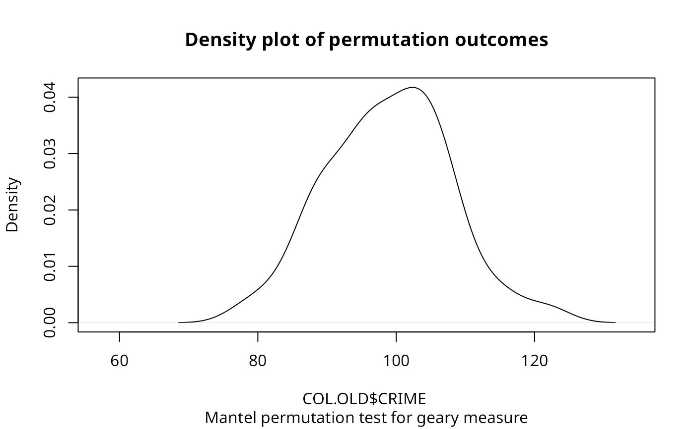

Mantel-Hubert spatial general cross product statistic
sp.mantel.mc.RdA permutation test for the spatial general cross product statistic with
Moran (\(C_{ij} = z_i z_j\)), Geary
(\(C_{ij} = (z_i - z_j)^2\)), and Sokal
(\(C_{ij} = |z_i - z_j|\)) criteria, for
\(z_i = (x_i - \bar{x}) / \sigma_{x}\).
plot.mc.sim is a helper function to plot the outcomes of the
permutation test.
Arguments
- var
a numeric vector the same length as the neighbours list in listw
- listw
a
listwobject created for example bynb2listw- nsim
number of permutations
- type
"moran", "geary" or "sokal" criteria for similarity
- zero.policy
default
attr(listw, "zero.policy")as set whenlistwwas created, if attribute not set, use global option value; if TRUE assign zero to the lagged value of zones without neighbours, if FALSE assign NA- alternative
a character string specifying the alternative hypothesis, must be one of "greater" (default), "two.sided", or "less".
- spChk
should the data vector names be checked against the spatial objects for identity integrity, TRUE, or FALSE, default NULL to use
get.spChkOption()- return_boot
return an object of class
bootfrom the equivalent permutation bootstrap rather than an object of classhtest- x
the object to be plotted
- xlim
the range of the x axis
- xlab
a title for the x axis
- main
an overall title for the plot
- sub
a sub title for the plot
- ptype
either "density" or "hist"
- ...
further arguments passed through
Value
A list with class htest and mc.sim containing the following components:
- statistic
the value of the observed Geary's C.
- parameter
the rank of the observed Geary's C.
- alternative
a character string describing the alternative hypothesis.
- method
a character string giving the method used.
- data.name
a character string giving the name(s) of the data, and the number of simulations.
- p.value
the pseudo p-value of the test.
- res
nsim simulated values of statistic, final value is observed statistic
- estimate
the mean and variance of the simulated distribution.
References
Cliff, A. D., Ord, J. K. 1981 Spatial processes, Pion, p. 22-24,
Haining, R. 1990 Spatial data analysis in the social
and environmental sciences, Cambridge: Cambridge University Press, p. 230–1.
The function has been checked against general matrix code posted to the
r-help list by Ben Bolker on 1 May 2001; another mantel() function
is in the vegan package.
Author
Roger Bivand Roger.Bivand@nhh.no
Examples
data(oldcol)
sim1 <- sp.mantel.mc(COL.OLD$CRIME, nb2listw(COL.nb),
nsim=99, type="geary", alternative="two.sided")
sim1
#>
#> Mantel permutation test for geary measure
#>
#> data: COL.OLD$CRIME
#> weights: nb2listw(COL.nb)
#> number of simulations + 1: 100
#>
#> statistic = 51.927, observed rank = 1, p-value = 0.02
#> alternative hypothesis: two.sided
#> sample estimates:
#> mean of permutations sd of permutations
#> 98.852997 8.934135
#>
plot(sim1)

sp.mantel.mc(COL.OLD$CRIME, nb2listw(COL.nb), nsim=99,
type="sokal", alternative="two.sided")
#>
#> Mantel permutation test for sokal measure
#>
#> data: COL.OLD$CRIME
#> weights: nb2listw(COL.nb)
#> number of simulations + 1: 100
#>
#> statistic = 36.695, observed rank = 1, p-value = 0.02
#> alternative hypothesis: two.sided
#> sample estimates:
#> mean of permutations sd of permutations
#> 56.418584 3.227064
#>
sp.mantel.mc(COL.OLD$CRIME, nb2listw(COL.nb), nsim=99,
type="moran")
#>
#> Mantel permutation test for moran measure
#>
#> data: COL.OLD$CRIME
#> weights: nb2listw(COL.nb)
#> number of simulations + 1: 100
#>
#> statistic = 24.526, observed rank = 100, p-value = 0.01
#> alternative hypothesis: greater
#> sample estimates:
#> mean of permutations sd of permutations
#> -0.3401381 4.5579226
#>